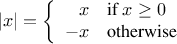
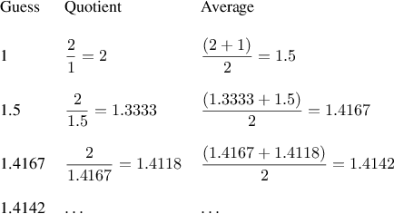

A powerful programming language is more than just a means for
instructing a computer to perform tasks. The language also serves as
a framework within which we organize our ideas about processes. Thus,
when we describe a language, we should pay particular attention to the
means that the language provides for combining simple ideas to form
more complex ideas. Every powerful language has three mechanisms for
accomplishing this:
-
primitive expressions, which represent the simplest
entities the language is concerned with,
-
means of combination, by which compound
elements are built from simpler ones, and
-
means of abstraction, by
which compound elements can be named and manipulated as units.
In programming, we deal with two kinds of elements:
functions
and
data. (Later we will discover that they are really not so distinct.)
Informally, data is “stuff” that we want to manipulate, and
functions
are descriptions of the rules for manipulating the data.
Thus, any powerful programming language should be able to describe
primitive data and primitive
functions
and should have methods for
combining and abstracting
functions
and data.
In this chapter we will deal only with simple
numerical data so that
we can focus on the rules for building
functions.
1
In later chapters we will see that
these same rules allow us to build
functions
to manipulate compound data as well.
One easy way to get started at programming in JavaScript is
to interact with the JavaScript interpreter that is built into
the browser you are using to view this page.
JavaScript programs are called statements.
We have set up the statements shown in blue such that
you can click on them.
The mouse click on JavaScript statements is
programmed in such
a way that the JavaScript interpreter evaluates the
statement and displays the resulting value in a box that then
appears below the statement.
The program that makes the mouse click
on a JavaScript statement evaluate the statement is itself
written in JavaScript; we call it the script for
the mouse click.
One kind of statement is an
expression statement, which consists of an
expression, followed by a semicolon.
A simple kind of an expression is a number.
(More precisely, the expression consists of the numerals that
represent the number in base 10.) If you ask our script to
evaluate the expression statement
486;
by clicking it, it will respond by printing the result of the
evaluation
in a box that appears below the expression statement.
Click on the primitive expression statement, and see what happens!
Expressions representing numbers may be combined with operators
(such as
+ or
*) to form a
compound expression that represents the
application of a corresponding primitive
function to those numbers. For example, evaluate
any of the following expression statements
2
by clicking on it:
137 + 349;
1000 - 334;
5 * 99;
10 / 5;
2.7 + 10;
Expressions such as these, which contain other expressions
as components, are called combinations.
Combinations that are formed by an
operator symbol in the middle, and
operand expressions to the left and right of it,
are called
operator combinations.
The value of an operator combination is
obtained by applying the function specified by the operator to the
arguments that are the values of the operands.
The convention of placing the operator between the operands is
known as
infix notation.
It follows
the mathematical notation that the reader is most
likely familiar with from school and everyday life.
As in mathematics, operator combinations can
be
nested, that is, they
can take arguments that themselves are operator combinations:
(3 * 5) + (10 - 6);
As usual, parentheses are used to group the operations together
in order to avoid ambiguities. JavaScript also follows the usual
conventions when parentheses are left out;
multiplication and division
bind stronger than
addition and subtraction.
For example,
3 * 5 + 10 / 2;
stands for
(3 * 5) + (10 / 2);
We say that
*
and
/
have
higher precedence than
+
and
-.
Sequences of
additions and subtractions are read from left to right, as are
sequences of multiplications and divisions. Thus,
3 / 5 * 2 - 4 + 3;
stands for
(((3 / 5) * 2) - 4) + 3;
We say that the operators
+,
-,
* and
/ are
left-associative.
There is no limit (in principle) to the depth of such nesting and to
the overall complexity of the expressions that the JavaScript interpreter
can evaluate.
It is we humans who get confused by still relatively
simple expressions such as
3 * (2 * (4 + (3 - 5))) + (10 * (27 / 6))
which the interpreter would readily evaluate to be 57. We can help
ourselves by writing such an expression in the form
3 * (2 * (4 + (3 - 5)))
+
(10 * (27 / 6))
to visually separate the major components of the expression.
The interpreter always operates in the
same basic cycle: It reads a statement from the browser,
evaluates the statement, and prints the result.
This mode of operation is often expressed by saying that the
interpreter runs in a
read-eval-print loop.
Observe in particular that it is not necessary to explicitly
instruct the interpreter to print the value of the
statement.
A critical aspect of a programming language is the means it provides
for using
names to refer to computational objects. We say that the
name identifies a
variable whose
value is the object.
In JavaScript, we name things with
var. Evaluating
var size = 2;
causes the interpreter to associate the value 2 with the
name
size.
As we have seen, evaluating an
expression statement by clicking on it leads to the display of its
value. The purpose of evaluating the variable statement
var size = 2;
is to associate the
name
size
with the number 2, and not to compute a value as for
expression statements. Thus, the JavaScript interpreter returns the
special JavaScript
value
undefined as the value of the variable statement.
Once the name
size
has been associated with the number 2, we can
refer to the value 2 by name:
size;
Of course, the JavaScript interpreter needs to execute the variable
statement for
size
before the name
size can be used
in an expression. In this online book, the statements that need to be
evaluated before a new statement are omitted, in order to keep the
the text concise. However, in order to see and play with the
program, you can click on the blue boxes that contain statements.
The entire program then
appears in editable form in a pop-up window.
Thus, as a result of clicking on
5 * size;
a window appears that contains the statement
var size = 2;
5 * size;
Note that JavaScript statements can be placed in a sequence.
The interpreter evaluates the statements of the sequence in the given order,
and returns the value of the last statement as the value of the sequence.
Here are further examples of the use of
var:
var pi = 3.14159;
var radius = 10;
pi * radius * radius;
var circumference = 2 * pi * radius;
circumference;
Variable statements are our language’s
simplest means of abstraction, for they allow us to use simple names to
refer to the results of compound operations, such as the
circumference
computed above. In general, computational objects may have very
complex structures, and it would be extremely inconvenient to
have to remember and repeat their details each time we want to use
them. Indeed, complex programs are constructed by building, step
by step, computational objects of increasing complexity.
Our interpreter facilitates this step-by-step program construction
because name-object associations can be created incrementally in
successive interactions.
It should be clear that the possibility of associating values with
symbols and later retrieving them means that the interpreter must
maintain some sort of memory that keeps track of the name-object
pairs. This memory is called the
environment
(more precisely the
global environment, since we will see later that a
computation may involve a number of different
environments).
6
One of our goals in this chapter is to isolate issues about process
descriptions. As a case in point, let us consider that, in evaluating
operator combinations, the interpreter proceeds as follows.
- To evaluate an operator combination, do the following:
- Evaluate the subexpressions of the expression.
- Apply the function that is denoted by
the operator to the arguments that are the values of
the operands.
Even this simple rule illustrates some important points about
processes in general. First, observe that the first step dictates
that in order to accomplish the evaluation process for an operator
expression
we must first perform the evaluation process on each argument of the
operator combination. Thus, the evaluation rule is
recursive in nature;
that is, it includes, as one of its steps, the need to invoke the rule
itself.
Notice how succinctly the idea of recursion can be used to express
what, in the case of a deeply nested expressions, would otherwise be
viewed as a rather complicated process. For example, evaluating
(2 + 4 * 6) * (3 + 12);
requires that the evaluation rule be applied to four different
expressions. We can obtain a picture of this process by
representing
the expression in the form of a
tree, as shown in
Figure
1.1.
Each expression is represented by a
node with
branches corresponding to the operator and the
operands of the operator combination stemming from it.
The
terminal nodes (that is, nodes with
no branches stemming from them) represent either operators or numbers.
Viewing evaluation in terms of the tree, we can imagine that the
values of the operands percolate upward, starting from the terminal
nodes and then combining at higher and higher levels. In general, we
shall see that recursion is a very powerful technique for dealing with
hierarchical, treelike objects. In fact, the “percolate values
upward” form of the evaluation rule is an example of a general kind
of process known as
tree accumulation.
|
|
Figure 1.
1 Tree representation, showing the value of each subexpression.
|
Next, observe that the repeated application of the first step brings
us to the point where we need to evaluate, not operator combinations, but
primitive expressions such as numerals or
names. We take care of the primitive cases by stipulating that
-
the values of numerals are the numbers that they name,
-
the values of names are the objects associated
with those names in the environment.
Notice the role of the
environment in determining the meaning of
the symbols in expressions. In
JavaScript, it is meaningless to speak of the value of an expression such as
x + 1
without specifying any information about the environment
that would provide a meaning for the
symbol x.
As we shall see in chapter 3, the general notion of
the environment as providing a context in which evaluation takes place
will play an important role in our understanding of program execution.
Notice that the
evaluation rule given above does not handle definitions.
For instance, evaluating
var x = 3;
does not apply the =
operator to two arguments, one
of which is the value of the symbol
x and the other of which is
3, since the purpose of the variable statement
is precisely to associate
x with a value.
(That is, the part x = 3
in the assignment statement
var x = 3;
is not an operator combination.)
The string “var”
in variable statements is rendered in bold letters to indicate that it
is a keyword in JavaScript. Keywords are reserved words that
carry a particular meaning, and thus cannot be used as variables.
A keyword or a combination of keywords instructs the
JavaScript interpreter to treat the respective statement in a special
way.
Each such syntactic form
has its own evaluation rule. The various kinds of statements (each
with its associated evaluation rule) constitute the
syntax of the
programming language.
We have identified in
JavaScript
some of the elements that must appear in
any powerful programming language:
-
Numbers and arithmetic operations are
primitive data and
functions.
-
Nesting of combinations provides a means of
combining operations.
-
Definitions that associate names with values provide a
limited means of abstraction.
Now we will learn about
function definitions, a much more powerful abstraction
technique by which a compound operation can be given a name and then
referred to as a unit.
We begin by examining how to express the idea of “squaring.” We
might say, “To square something, multiply it by itself.” This is
expressed in our language with the expression
The keyword
function
indicates that a function is being defined.
Here, we use the word “function” in a pragmatic
sense—as
instructions how to compute a new value from given
values— and not in the mathematical sense as a mapping from
a domain to a co-domain.
The function above represents the operation of multiplying
something by itself. The thing to be multiplied is given a local
name, x,
which plays the same role that a pronoun plays in
natural language.
Evaluating the function expression creates this
function.
The general form of a function expression is
The
are
the names used within the body of the function to refer to the
corresponding arguments of the function.
12
If there are more than one
formal parameter, they are separated by commas. The
is a statement that will return the value of
the function application. In the function definition above,
the keyword
return
precedes the expression
x * x,
indicating that the function returns the result of evaluating the
expression. In other words, the body of this function is a
return statement of the
form
13
In order to evaluate the statement that forms the body of the function,
the formal parameters are replaced by
the actual arguments to which the function is applied.
The
follow
the keyword
and are enclosed
in
parentheses.
Having defined the function,
we can now use it in a function application expression.
14
(function (x) { return x * x; }) (21);
The first pair of parentheses encloses the function expression. Just like with
arithmetic expressions, the interpreter evaluates it, resulting in a function value.
The second pair of parentheses indicate that the function value is to be applied
to an argument, here 21.
Just as with arithmetic expressions, it is useful to refer to a function by a name,
using a variable statement.
var square = function (x) { return x * x; };
Now, we can simply write
square(21);
in order to apply the function. Other examples of using the
square
function are
square(2 + 5);
and
square(square(3));
Statements of the form
perform two tasks. Firstly, they create a function, and secondly they are given
it a name. Naming functions is obviously very useful, and therefore these two
steps are supported in JavaScript with a slightly more convenient notation:
which we call a
function definition statement and which
has essentially the same meaning as the variable statement above.
Thus, the variable statement above that defines the variable
square can be equivalently written as
function square(x) { return x * x; };
We can also use square
as a building block in defining other
functions. For example,
can be expressed as
We can easily define a function
sum_of_squares
that, given any two numbers as arguments, produces the
sum of their squares:
function sum_of_squares(x,y) {
return square(x) + square(y);
}
Now we can use
sum_of_squares
as a building block in constructing further functions:
function f(a) {
return sum_of_squares(a + 1, a * 2);
}
The application of functions such as
sum_of_squares(3,4)
are—after operator combinations and function expressions—the third
kind of combination
of expressions into larger expressions that we encounter.
An application combination has the general form
To evaluate an application combination,
the interpreter follows a similar process as for operator combinations,
which we described in
section
1.1.3.
Here, the interpreter
evaluates all component expressions
of the application and applies the function
(which is the value of
) to the
arguments (which are the values
of
).
The substitution model for function application can handle
functions whose body consists of a single
return statement. All functions
encountered so far follow this format, and most functions in
this chapter can be easily converted into this format.
For functions with this property,
the process of function application proceeds as follows:
-
To apply a function to arguments, evaluate the
return
expression of the body of the
function with each formal parameter replaced by the
corresponding
argument.
To illustrate this process,
let’s evaluate the function application
f(5)
where
f is the function defined in
section
1.1.4.
We begin by retrieving the
return
expression of the body of
of
f:
Then we replace the formal parameter
a
by the argument 5:
The value of the function application is obtained by evaluating
this expression.
Thus the problem reduces to the evaluation of an application combination with two
operands and an operator
sum_of_squares.
Evaluating this combination involves three subproblems. We must evaluate the
operator to get the function to be applied, and we must evaluate the
operands to get the arguments.
Now
5 + 1 produces 6 and
5 * 2 produces 10,
so we must apply the
sum_of_squares function
to 6 and 10.
These values are substituted
for the formal parameters
x and
y in the body of
sum_of_squares,
reducing the expression to
If we use the definition of
square,
this reduces to
which reduces by multiplication to
and finally to
The process we have just described is called the
substitution
model for
function
application. It can be taken as a model that
determines the “meaning” of
function
application, insofar as the
functions
in this chapter are concerned. However, there are two
points that should be stressed:
-
The purpose of the substitution is to help us think about
function
application, not to provide a description of how
the interpreter really works. Typical interpreters do not evaluate
function
applications by manipulating the text of a
function
to substitute values for the formal parameters. In practice, the
“substitution” is accomplished by using a local environment for the
formal parameters. We will discuss this more fully in chapters 3 and
4 when we examine the implementation of an interpreter in detail.
-
Over the course of this book, we will present a sequence of
increasingly elaborate models of how interpreters work, culminating
with a complete implementation of an interpreter and compiler in
chapter 5. The substitution model is only the first of these
models—a way to get started thinking formally about the evaluation
process. In general, when
modeling phenomena in science and
engineering, we begin with simplified, incomplete models. As we
examine things in greater detail, these simple models become
inadequate and must be replaced by more refined models. The
substitution model is no exception. In particular, when we address in
chapter 3 the use of
functions
with “mutable data,” we will see that
the substitution model breaks down and must be replaced by a more
complicated model of
function
application.15
Applicative order versus normal order
According to the description of evaluation given in
section
1.1.3, the interpreter first
evaluates the operator and operands and then applies the resulting
function
to the resulting arguments. This is not the only way to perform
evaluation. An alternative evaluation model would not evaluate the
operands until their values were needed. Instead it would first substitute
operand expressions for parameters until
it obtained an expression involving only primitive operators, and
would then perform the evaluation. If we used this method, the
evaluation of
would proceed according to the sequence of expansions
followed by the reductions
This gives the same answer as our previous evaluation model, but the
process is different. In particular, the evaluations
of
5 + 1 and
5 * 2 are each performed twice here,
corresponding to the reduction of the expression
with
x replaced respectively
by
5 + 1
and
5 * 2.
This alternative “fully expand and then reduce” evaluation method is
known as
normal-order evaluation, in contrast to the “evaluate
the arguments and then apply” method that the interpreter actually
uses, which is called
applicative-order evaluation. It can be
shown that, for
function
applications that can be modeled using
substitution (including all the
functions
in the first two chapters
of this book) and that yield legitimate values, normal-order and
applicative-order evaluation produce the same value. (See
exercise
1.5 for an instance of
an “illegitimate” value where normal-order and applicative-order
evaluation do not give the same result.)
JavaScript uses applicative-order evaluation, partly because of the
additional efficiency obtained from avoiding multiple evaluations of
expressions such as those illustrated with
5 + 1
and
5 * 2 above and, more significantly,
because normal-order evaluation
becomes much more complicated to deal with when we leave the realm of
functions that can be modeled by substitution. On the other hand,
normal-order evaluation can be an extremely valuable tool, and we will
investigate some of its implications in chapters 3 and 4.
17
The expressive power of the class of functions that we can define at
this point is very limited, because we have no way to make tests and
to perform different operations depending on the result of a test.
For instance, we cannot define a function that computes the
absolute
value of a number by testing whether the number is negative or not,
and taking different actions in each case according
to the rule

This construct is called a conditional,
and there is a special statement in JavaScript for notating it.
It is called a
conditional statement,
and it is used as follows:
function abs(x) {
if (x >= 0)
return x;
else
return -x;
}
The general form of a conditional statement is
Conditional statements begin with the
keyword
if followed by
a parenthesized expression
()—that is,
an expression whose value is interpreted as
either true or false.
19
The
is followed by the statement
,
followed by the keyword
else, and finally the
statement
.
To evaluate a conditional statement,
the interpreter starts by evaluating the
part of the expression.
If the
evaluates to a true value, the interpreter then evaluates
.
Otherwise it evaluates
.
The word
predicate is used for functions that return true
or false, as well as for expressions that evaluate to true or false.
The absolute-value function
abs
makes use of the
primitive
predicate
>=.
21 This predicate takes two
numbers as arguments and tests whether the first number is
greater than or equal to the second number,
returning true or false accordingly.
Another way
to write the absolute-value function is
function abs(x) {
return x >= 0 ? x : -x;
}
This version uses a
conditional expression rather than a
conditional statement; the body consists of a single
return statement, and the conditional
is contained in its expression.
The general form of a conditional expression is
To evaluate a conditional expression,
the interpreter starts by evaluating the
part of the expression.
If the
evaluates to a true value, the interpreter then evaluates
and returns its value. Otherwise it evaluates
and returns its value.
Notice that
&& and
|| are not evaluated like arithmetic
operators such as
+, because their right-hand
expression is not always evaluated.
JavaScript
provides a number of primitive predicates that work similar to
>=, including
>,
<,
<=, and
===.
In addition to these primitive
predicates, there are logical
composition operations, which enable us to construct compound
predicates.
The three most frequently used are these:
-
&&
The interpreter
evaluates the expression .
If it evaluates to false,
the value of the whole
expression is false, and the expression
is not evaluated.
If  evaluates to true,
the value of the whole expression
is the value of
.
evaluates to true,
the value of the whole expression
is the value of
.
-
||
The interpreter evaluates the expression
 . If
it evaluates to true,
the value of the whole expresssion is true, and
the expression is not evaluated.
If evaluates to false,
the value of the whole expression is the value of
.
. If
it evaluates to true,
the value of the whole expresssion is true, and
the expression is not evaluated.
If evaluates to false,
the value of the whole expression is the value of
.
-
!
The value of a ! expression is true
when the expression evaluates to false,
and false otherwise.
Notice that
&& and
|| are not evaluated like arithmetic
operators such as
+, because their right-hand
expression is not always evaluated. The operator
!, on the other hand, is an operator, which
follows the evaluation rule of section
1.1.3.
It is a
unary operator, which means that it takes only one argument, whereas the
arithmetic operators encountered so far are
binary,
taking two arguments. The operator
! precedes its argument; we call it a
prefix operator.
As an example of how these are used, the condition that a
number
be in the range may be expressed as
Note that the binary
operator &&
has lower precedence than the comparison operators
> and
<.
As another example, we can define a predicate to test whether one
number is not equal to another number.
function not_equal(x,y) {
return x > y || x < y;
}
or alternatively as
function not_equal(x,y) {
return !(x >= y && x <= y);
}
Note that the operator
!= when applied
to two numbers, behaves the same as
not_equal.
Exercise 1.1.
Below is a sequence of statements. Before you click on a statement,
predict what the result of its evaluation will be.
10;
5 + 3 + 4;
9 - 1;
6 / 2;
2 * 4 + (4 - 6);
var a = 3;
var b = a + 1;
a + b + a * b;
a === b;
if (b > a && b < a * b)
b;
else a;
if (a === 4)
6;
else if (b === 4)
6 + 7 + a;
else 25;
2 + (b > a ? b : a);
(a > b
? a
: a < b
? b
: -1)
*
(a + 1);
Note that the statement
if (a === 4)
6;
else if (b === 4)
6 + 7 + a;
else 25;
consists of two conditional statements, where the second
one forms the alternative statement of the first one. If you want
to make that clear, you can indent the lines like this:
if (a === 4)
6;
else
if (b === 4)
6 + 7 + a;
else 25;
Exercise 1.2.
Translate the following expression into
JavaScript
Exercise 1.3.
Define a
function
that takes three numbers as arguments and returns
the sum of the squares of the two larger numbers.
Exercise 1.4.
Observe that our model of evaluation allows for application combinations whose
functions are compound expressions. Use this observation to
describe the behavior of the following function:
function plus(a,b) { return a + b; }
function minus(a,b) { return a - b; }
function a_plus_abs_b(a,b) {
return (b > 0 ? plus : minus)(a,b);
}
Note that in the conditional expression, we cannot directly use the operators
+ and
- instead of the
variables
plus and
minus because in infix notation, only
operator symbols are allowed, not compound expressions.
23
Exercise 1.5.
Ben Bitdiddle has invented a test to determine whether the interpreter
he is faced with is using applicative-order evaluation or normal-order
evaluation. He defines the following two
functions
:
function p() {
return p();
}
function test(x,y) {
return (x === 0) ? 0 : y;
}
Then he evaluates the
statement
test(0,p())
What behavior will Ben observe with an interpreter that uses
applicative-order evaluation? What behavior will he observe with an
interpreter that uses normal-order evaluation? Explain your answer.
(Assume that the evaluation rule for
conditional statements
is the
same whether the interpreter is using normal or applicative order:
The predicate expression is evaluated first, and the result
determines whether to evaluate
the consequent or the alternative
statement.)
Functions,
as introduced above, are much like ordinary mathematical
functions. They specify a value that is determined by one or more
parameters. But there is an important difference between
mathematical functions and computer
functions.
Computer functions
must be effective.
As a case in point, consider the problem of computing square
roots. We can define the square-root function as
This describes a perfectly legitimate mathematical function. We could
use it to recognize whether one number is the square root of another, or
to derive facts about square roots in general. On the other hand, the
definition does not describe a
computer function.
Indeed, it tells us almost
nothing about how to actually find the square root of a given number. It
will not help matters to rephrase this definition in pseudo-JavaScript:
This only begs the question.
The contrast between
mathematical function and computer function
is a reflection of the
general distinction between describing properties of things and
describing how to do things, or, as it is sometimes referred to, the
distinction between
declarative knowledge and imperative knowledge.
In
mathematics we are usually concerned with declarative (what is)
descriptions, whereas in computer science we are usually concerned
with imperative (how to) descriptions.
24
How does one compute square roots? The most common way is to use
Newton’s method of successive approximations, which says that whenever
we have a guess
for the value of the square root of a
number
,
we can perform a simple manipulation to get a better guess (one closer
to the actual square root) by averaging
with
.
25
For example, we can compute
the square root of 2 as follows. Suppose our initial guess is 1:

Continuing this process, we obtain better and better
approximations to the square root.
Now let’s formalize the process in terms of functions. We start with
a value for the
radicand (the number whose square root we are trying
to compute) and a value for the guess. If the guess is good enough
for our purposes, we are done; if not, we must repeat the process with an
improved guess. We write this basic strategy as a
function:
function sqrt_iter(guess,x) {
if (good_enough(guess,x))
return guess;
else
return sqrt_iter(improve(guess,x), x);
}
A guess is improved by averaging
it with the quotient of the radicand and the old guess:
function improve(guess,x) {
return average(guess,x / guess);
}
where
function average(x,y) {
return (x + y) / 2;
}
We also have to say what we mean by “good enough.” The
following will do for illustration, but it is not really a very good
test. (See exercise
1.7.)
The idea is to improve the answer until it is close enough so that its
square differs from the radicand by less than a predetermined
tolerance (here 0.001):
function good_enough(guess,x) {
return abs(square(guess) - x) < 0.001;
}
Finally, we need a way to get started. For instance, we can
always guess that the square root of any number is 1:
function sqrt(x) {
return sqrt_iter(1.0,x);
}
If we type these definitions to the interpreter, we can use
sqrt
just as we can use any
function
:
sqrt(9);
sqrt(100 + 37);
sqrt(sqrt(2) + sqrt(3));
square(sqrt(1000));
The sqrt program also illustrates that the simple functional
language we have introduced so far is sufficient for writing any
purely numerical program that one could write in, say, C or
Pascal. This might seem surprising, since we have not
yet introduced
any iterative
(looping) constructs that direct the
computer to do something over and over again. The function
sqrt_iter, on the
other hand, demonstrates how iteration can be accomplished using no
special construct other than the ordinary ability to call a
function.
Exercise 1.6.
Original exercise in Scheme not relevant for JavaScript version
Exercise 1.7.
The
good_enough
test used in computing square roots will not be
very effective for finding the square roots of very small numbers.
Also, in real computers, arithmetic operations are almost always
performed with limited precision. This makes our test inadequate for
very large numbers. Explain these statements, with examples showing
how the test fails for small and large numbers. An alternative
strategy for implementing
good_enough
is to watch how
guess
changes from one iteration to the next and to stop when the
change is a very small fraction of the guess. Design a square-root
function
that uses this kind of end test. Does this work better for
small and large numbers?
Exercise 1.8.
Newton’s method for cube roots is based on the fact that if
is an
approximation to the cube root of
, then a better approximation is
given by the value
Use this formula to implement a cube-root
function
analogous to the
square-root
function.
(In section
1.3.4 we
will see how to implement Newton’s method in general as an abstraction
of these square-root and cube-root
functions.)
Sqrt is our first example of a process defined by a set of
mutually defined
functions.
Notice that the definition of
sqrt-iter is
recursive; that is, the
function
is defined in
terms of itself. The idea of being able to define a
function
in
terms of itself may be disturbing; it may seem unclear how such a
“circular” definition could make sense at all, much less specify a
well-defined process to be carried out by a computer. This will be
addressed more carefully in
section
1.2. But first let’s consider
some other important points illustrated by the
sqrt example.
Observe that the problem of computing square roots breaks up naturally
into a number of subproblems: how to tell whether a guess is good
enough, how to improve a guess, and so on. Each of these tasks is
accomplished by a separate
function.
The entire
sqrt program
can be viewed as a cluster of
functions
(shown in
figure
1.2) that mirrors the
decomposition of the problem into subproblems.
|
|
Figure 1.
2 Functional decomposition of the
sqrt program.
|
The importance of this decomposition strategy is not simply that one
is dividing the program into parts. After all, we could take any
large program and divide it into parts—the first ten lines, the next
ten lines, the next ten lines, and so on. Rather, it is crucial that
each
function
accomplishes an identifiable task that can be used as a
module in defining other
functions.
For example, when we define the
good_enough function
in terms of square, we are able to
regard the square
function
as a
“black box.” We are not at
that moment concerned with how the
function
computes its
result, only with the fact that it computes the square. The details
of how the square is computed can be suppressed, to be considered at a
later time. Indeed, as far as the
good_enough function
is
concerned, square is not quite a
function
but rather an
abstraction of a
function,
a so-called
functional abstraction.
At this level of abstraction, any
function
that computes the square
is equally good.
Thus, considering only the values they return, the following two
functions
squaring a number should be indistinguishable.
Each takes a numerical
argument and produces the square of that number as the
value.
29
function square(x) {
return x * x;
}
function square(x) {
return Math.exp(double(Math.log(x)));
}
function double(x) {
return x + x;
}
So a
function
should be able to suppress detail. The
users of the
function
may not have written the
function
themselves, but may have obtained it from another programmer as a
black box. A user should not need to know how the
function
is implemented in order
to use it.
Local names
One detail of a
function’s implementation that should not matter to
the user of the
function
is the implementer’s choice of names for the
function’s formal parameters. Thus, the following
functions
should
not be distinguishable:
function square(x) {
return x * x;
}
function square(y) {
return y * y;
}
This principle—that the meaning of a
function
should be independent
of the parameter names used by its author—seems on the
surface to be
self-evident, but its consequences are profound. The simplest
consequence is that the parameter names of a
function
must be local
to the body of the
function.
For example, we used
square in
the definition of
good_enough
in our square-root
function
:
function good_enough(guess,x) {
return abs(square(guess) - x) < 0.001;
}
The intention of the author of
good_enough
is to determine if
the square of the first argument is within a given tolerance of
the second argument. We see that the author of
good_enough
used
the name guess to refer to the
first argument and x to
refer to the second argument. The argument of
square is
guess. If the author of
square used
x (as above)
to refer to that argument, we see that the
x in
good_enough
must be a different x than the one
in square.
Running the
function
square must
not affect the value
of x that is used by
good_enough,
because that value of
x may be needed by
good_enough
after square is done
computing.
If the parameters were not local to the bodies of their respective
functions,
then the parameter x in
square could be
confused with the parameter x in
good_enough,
and the
behavior of
good_enough
would depend upon which version of
square we used. Thus,
square would not be the black box
we desired.
A formal parameter of a
function
has a very special role in the
function
definition, in that it doesn’t matter what name the formal
parameter has. Such a name is called a
bound variable, and we
say that the
function
definition
binds its formal parameters.
The meaning of a
function
definition is unchanged if a bound variable
is consistently renamed throughout the definition.
30 If a variable is not bound, we say that it is
free. The
set of expressions for which a binding defines a name is called the
scope of that name.
In a
function
definition, the bound variables
declared as the
formal parameters of the
function
have the body of
the
function
as their scope.
In the definition of good_enough above,
guess and x are
bound variables but abs, and
square are free.
The meaning of good_enough
should be independent of the names we
choose for guess and x
so long as they are distinct and
different from abs, and
square. (If we renamed
guess to
abs we would have introduced a bug by
capturing
the variable abs.
It would have changed from free to bound.) The
meaning of good_enough is
not independent of the names of its
free variables, however. It surely depends upon the fact (external to
this definition) that the symbol abs names a
function
for computing the absolute value of a number.
The JavaScript function good_enough will
compute a different mathematical function if we substitute
Math.cos (JavaScript’s cosine function)
for abs in its definition.
Internal definitions and block structure
We have one kind of name isolation available to us so far: The formal
parameters of a
function
are local to the body of the
function. The
square-root program illustrates another way in which we would like to
control the use of names.
The existing program consists of
separate
functions
:
function sqrt(x) {
return sqrt_iter(1.0,x);
}
function sqrt_iter(guess,x) {
if (good_enough(guess,x))
return guess;
else
return sqrt_iter(improve(guess,x), x);
}
function good_enough(guess,x) {
return abs(square(guess) - x) < 0.001;
}
function improve(guess,x) {
return average(guess,x / guess);
}
The problem with this program is that the only
function
that is
important to users of
sqrt is
sqrt. The other
functions
(
sqrt_iter,
good_enough,
and
improve)
only clutter up their minds. They may not define any other
function
called
good_enough
as part of
another program to work together
with the square-root program,
because
sqrt needs it. The
problem is especially severe in the construction of large systems by
many separate programmers. For example, in the construction of a
large library of numerical
functions,
many numerical functions are
computed as successive approximations and thus might have
functions
named
good_enough
and
improve as auxiliary
functions.
We would like to localize the
subfunctions,
hiding them inside
sqrt so that
sqrt could coexist with other
successive approximations, each having its own private
good_enough function.
To make this possible, we allow a
function
to have
internal definitions that are local to that
function.
For example, in the square-root problem we can write
function sqrt(x) {
function good_enough(guess,x) {
return abs(square(guess) - x) < 0.001;
}
function improve(guess,x) {
return average(guess,x / guess);
}
function sqrt_iter(guess,x) {
if (good_enough(guess,x))
return guess;
else return sqrt_iter(improve(guess,x),x);
}
return sqrt_iter(1.0,x);
}
Such nesting of definitions, called
block structure,
is basically the right solution to the simplest
name-packaging problem. But there is a better idea lurking here. In
addition to internalizing the definitions of the auxiliary
functions,
we can simplify them. Since
x is bound in the definition of
sqrt, the
functions
good_enough,
improve, and
sqrt_iter,
which are defined internally to
sqrt, are in the
scope of
x. Thus, it is not necessary to pass
x explicitly to
each of these
functions.
Instead, we allow
x to be a
free variable in the internal definitions, as shown below. Then
x
gets its value from the argument with which the enclosing
function
sqrt is called. This discipline is called
lexical
scoping.
31
function sqrt(x) {
function good_enough(guess) {
return abs(square(guess) - x) < 0.001;
}
function improve(guess) {
return average(guess,x / guess);
}
function sqrt_iter(guess) {
if (good_enough(guess))
return guess;
else return sqrt_iter(improve(guess),x);
}
return sqrt_iter(1.0);
}
We will use block structure extensively to help us break
up large programs into tractable pieces.
32
The idea of block structure originated with the
programming language
Algol 60. It appears in most advanced
programming languages and is an important tool for helping to organize
the construction of large programs.